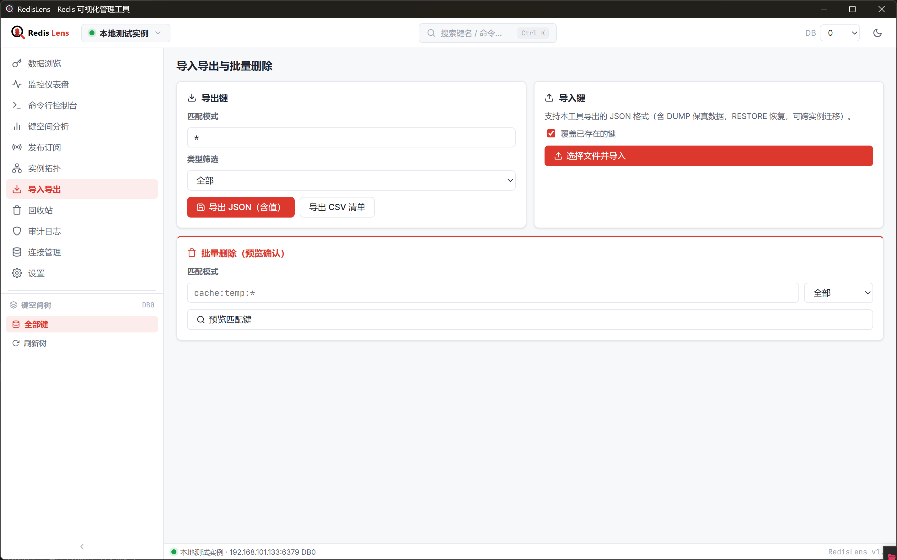

导入导出与批量删除
导入导出用于备份、跨实例迁移与批量清理。JSON 导出包含 Redis DUMP 的
Base64 保真数据，可通过 RESTORE 恢复任意受支持类型；CSV 只导出键清单，
适合做报表与审计对照。
作用范围
所有操作都作用于当前连接 + 当前 DB，按匹配模式与类型筛选。
单次导出 / 导入的超时上限为 10 分钟；集群模式下扫描通常只覆盖其中一个节点。

导出 JSON（含值）
在「导入导出」页填写匹配模式与类型，点击「导出 JSON（含值）」，选择保存路径。
默认文件名 redislens-export.json。
文件是 JSONL 格式：第一行是文件头，之后每行是一条键记录。 这样做便于流式处理，避免把整个文件构造成一个巨大的 JSON 数组。
{"format":"RedisLens-export","version":1,"count":2}
{"key":"user:1001","type":"hash","pttl":-1,"dump":"AAAB8wAAA..."}
{"key":"session:abc","type":"string","pttl":3600000,"dump":"AAAB9A...","value":"hello"}| 字段 | 说明 |
|---|---|
format | 固定为 RedisLens-export，导入时用于校验。 |
version | 导出格式版本，当前为 1。 |
source | 导出时连接的名称，仅作来源标识。 |
exportedAt | 导出时间（ISO 8601）。 |
count | 记录条数。 |
key / type | 键名与归一化后的类型。 |
pttl | 剩余过期时间（毫秒）；-1 表示永久。 |
dump | DUMP 结果的 Base64，用于保真恢复。 |
value | 仅 string / json 类型提供的人类可读值，作为 RESTORE 失败时的回退。 |
导出注意事项
- 导出基于
SCAN，遍历期间的新增 / 删除可能导致结果不是严格快照。 - RedisLens 会先把记录收集到内存再写文件；超大键空间请按前缀分批导出，避免内存与 10 分钟超时问题。
- 导出不会修改数据；只读模式下也可以导出。
- 导出成功后写入一条
export审计记录（文件名与匹配模式）。
导出 CSV 清单
CSV 是轻量键清单，不含值，不能用于恢复。表头固定为：
key,type,ttl_ms,memory_bytes
"user:1001",hash,0,2048
"session:abc",string,3600000,64- 每个键一行，字段为键名、类型、TTL（毫秒）与
MEMORY USAGE字节数。 - CSV 中的 TTL 列对永久键显示
0；需要严格区分「永久 / 剩余时间」时，以 JSON 导出的pttl（-1表示永久）为准。 - 默认文件名
redislens-keys.csv。 - 适合在 Excel / 脚本中做键分布分析；导入功能只接受 RedisLens 的 JSON 导出文件，不接受 CSV。
导入
点击「选择文件并导入」，选择一个由 RedisLens 导出的 JSON 文件。 导入会先解析并校验文件头，然后逐条恢复：
-
校验格式
文件头必须是
RedisLens-export；否则直接报错「not a RedisLens export file」。 -
按覆盖策略处理
勾选「覆盖已存在的键」时使用
RESTORE REPLACE； 未勾选时先EXISTS，已存在则跳过并计入「跳过」。 -
恢复值，必要时回退
优先用
RESTORE恢复 DUMP（保留类型、编码与 TTL）。 如果RESTORE失败且记录带有人类可读值，则对 string 用SET、 对 json 用JSON.SET重建；其他类型计为失败。 - 查看报告 页面显示总计、成功、跳过、失败与耗时，并提示导入了多少键。
跨版本 / 跨模块迁移不一定 100% 成功
DUMP / RESTORE 受 Redis 版本与模块影响。目标实例版本过低、
缺少 RedisJSON 等模块，或 DUMP 编码不兼容时，部分记录会失败。
这类失败会如实计入报告，不会静默当成成功。
- 导入会将整个文件读入内存，超大文件需要预留足够内存。
- 只读模式下导入按钮禁用，后端也会拒绝。
- 导入成功写入一条
import审计记录，包含成功 / 跳过 / 失败计数。 - 覆盖模式会直接替换同名键，操作前建议先导出备份。
批量删除
「批量删除」先扫描匹配键并展示预览，确认后才执行删除。流程被刻意拆成三步， 避免一次误输入清空整个库。
1. 预览
- 填写匹配模式（必填）并可选类型筛选，点击「预览匹配键」。
- 预览会扫描整个 DB，统计匹配总数（最多统计到 5,000,000 个）， 并最多保留 1000 个键作为明细样本。
- 预览不会删除任何数据。
2. 确认
点击「确认删除」后，会要求输入完整的匹配模式（例如 cache:temp:*）
才能继续。输入不一致时确认按钮保持禁用。
3. 执行
- 删除针对本次预览中的键执行（最多 1000 个），每 500 个一批。
- 每个键先
DUMP备份到回收站，再UNLINK；备份失败会中止该键的删除并报错。 - 如果匹配总数超过 1000，请缩小匹配模式分批处理，不要把「预览总数」当作本次实际删除量。
- 删除完成后写入
key_delete审计记录，级别为warn。
回收站容量有限
回收站上限为 100 条 / 64 MB，超出后自动淘汰最旧条目。
批量删除数百个键时，早期的备份可能已被淘汰，无法全部恢复。
大批量清理前，请先用 JSON 导出做完整备份。
推荐的迁移流程
- 只读源实例 为源连接开启只读模式，避免迁移过程中数据继续变化。
-
按前缀分批导出
用
user:*、order:*等模式分批导出，降低单文件体积与超时风险。 - 在目标实例导入 先在小范围键上验证类型、TTL 与模块兼容性，再全量导入；根据需要开启覆盖。
- 核对报告与抽样 检查成功 / 失败计数，并在数据浏览中抽查 Hash、Stream、JSON 等复杂类型。